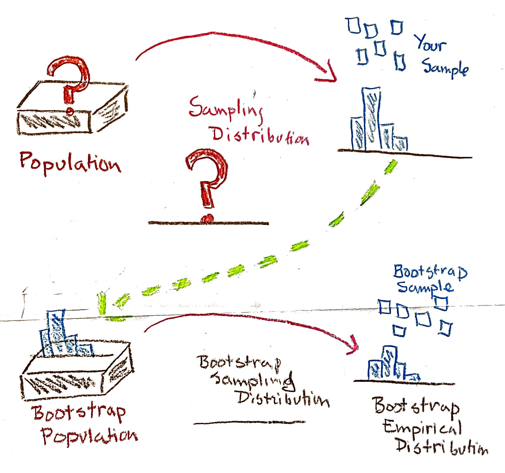

Rows: 227
Columns: 2
$ rain_inches <dbl> 0.020, 0.001, 0.001, 0.120, 0.080, 0.420, 1.720, 0.050, 0.…
$ year <fct> 1960, 1960, 1960, 1960, 1960, 1960, 1960, 1960, 1960, 1960…Bootstrap
The bootstrap is a resampling method for estimating measures of accuracy for the estimator (such as variance or confidence intervals) when obtaining them analytically is difficult. Resampling methods have become extremely common and absolutely indispensable in statistics due to the widespread availability of computing power. We use the bootstrap to quantify the uncertainty associated with an estimator.
We can view the sample as the population in two ways, leading to two different kinds of bootstrap.
We are willing to assume that the distribution of the population is from a particular parametric family of distributions. We estimate the parameters of that distribution, and then resample from the estimated distribution, using these samples to build a probability distribution for our parameter estimator. This method is called the parametric bootstrap. The results will be similar to what you would get if you manipulate the exact sampling distribution of your estimator under your distributional assumption.
We don’t know the population distribution, and don’t know if a parametric family is appropriate. We just resample from the sample. This is called a nonparametric bootstrap as we make no assumption about the distribution, and can be used in a very wide variety of situations. This makes no specific distributional assumptions about the data, so it is robust to parametric assumptions. But, as we will see, even the nonparametric bootstrap has assumptions, like assumptions of independence and sufficiently large sample size.
In what follows we are going to focus on the non-parametric bootstrap, since that is what is most commonly used in practice.
The basic idea of the bootstrap is to use the empirical distribution of the sample as an approximating distribution of the population when the sample is large. That is, we use the sample as a stand-in for the population, and resample from it.
The name comes from the phrase, “pull yourself up by your bootstraps” which means to succeed by your own cleverness/hard work - without getting help from others; here we estimating something tricky by cleverly reusing the same sample we started with.
Caution
Bootstrap works only if the sample is large enough to accurately represent the population distribution. Bootstrapping cannot fix the problem of using a small sample for inference.
We’re first going to go through the procedure before we try to understand why it works. The bootstrap procedure to approximate the sampling distribution for \(\hat\theta\), given a sample \(X_1, \ldots, X_n\) would be:
- Compute the observed value of \(\hat\theta\) from our data
- Let \(B\) be some large number (such as 5000).
- For each \(i\), \(i = 1, 2, \ldots, B\), do the following steps:
- Get a new sample of the same size, n by resampling with replacement from the original sample.
- Compute the observed value of the estimator for this new sample, and call it \(\hat\theta_i^*\). Repeat steps (i) and (ii) to get \(\hat\theta_1^*, \hat\theta_2^*, \ldots, \hat\theta_B^*\). The \(*\) indicates that it is a bootstrap estimate, i.e. calculated from our bootstrap sample.
- Estimate quantities from the distribution of \(\hat\theta_i^*\)
- the variance as \(\displaystyle \dfrac{1}{B} \sum_{i=1}^B \left(\hat\theta_i^*-\overline{\hat\theta^*}\right)^2\), where \(\overline{\hat\theta^*} = \displaystyle \dfrac{1}{B} \sum_{i=1}^B\hat\theta_i^*\) is the mean of \(\hat\theta_1^*, \hat\theta_2^*, \ldots, \hat\theta_B^*\). The bootstrap SE estimate, denoted \(s_{\mathrm{boot}}\) will be the square root of the bootstrap estimate of the variance.
- The bootstrap bias estimate will be \(\overline{\hat\theta^*}-\hat\theta\).
- We will go into confidence intervals in more detail in the next section
Confidence intervals using the bootstrap
There are a number of ways to using the bootstrap to compute confidence intervals. Here are three ways of finding a \(100(1-\alpha)\%\) confidence interval (\(0<\alpha<1\)).
- Bootstrap percentile interval
The confidence interval is given by \((q_{\alpha/2}, q_{1-\alpha/2})\), where \(q_{\alpha/2}\) is the \(\alpha/2\)th quantile of the bootstrap distribution and \(q_{1-\alpha/2}\) is the \((1-\alpha/2)\)th quantile of the bootstrap distribution. Since \(P(\hat\theta^* \le q_{\alpha/2}) = \alpha/2\), and \(P(\hat\theta^* \le q_{1-\alpha/2}) = 1-\alpha/2\), the area captured in the middle is \(1-\alpha\), which is what we need. This method is usually fine unless the distribution is very skewed.
- Bootstrap basic (pivotal) interval
This is sometimes called the reverse percentile interval and is the one defined in your textbook. We can use the bootstrap to compute approximate confidence intervals for the true value of \(\theta\). Suppose the true value of the parameter \(\theta\) is given by \(\theta_0\).
Define \(\Delta = \hat\theta - \theta_0\), and suppose we know the distribution of \(\Delta\). This means that we know the quantiles of this distribution, and if we want to capture the middle 95% of the values, we can use the 2.5th percentile and 97.5th percentiles to do this. Denote the 2.5th percentile by \(q_{0.025}\) and the 97.5th percentile by \(q_{0.975}\).
This means that \(P(\Delta \le q_{0.025}) = 0.025\) and \(P(\Delta \le q_{0.975}) = 0.975\)
Then we have that: \[ P(q_{0.025}\le \Delta \le q_{0.975}) = 0.95 \Rightarrow P(q_{0.025}\le \hat\theta - \theta_0 \le q_{0.975}) = 0.95 \] We can manipulate the inequalities to isolate \(\theta_0\) in the center: \[ \begin{align} 0.95 &= P(q_{0.025}\le \hat\theta - \theta_0 \le q_{0.975})\\ &= P(q_{0.025} -\hat\theta \le - \theta_0 \le q_{0.975} -\hat\theta)\\ &= P(- q_{0.025} + \hat\theta \ge \theta_0 \ge - q_{0.975} + \hat\theta)\\ &= P( \hat\theta - q_{0.975}\le \theta_0 \le \hat\theta -q_{0.025}) \\ \end{align} \] This gives us a 95% confidence interval for \(\theta_0\). There is nothing special about 95%, except that it is commonly used as a confidence level. We could use any confidence level, say \(1-\alpha\). (When we use a 95% CI, \(\alpha\) is \(0.05\).)
Then, to capture \(1-\alpha\) in the middle, we need the \(\dfrac{\alpha}{2}\) and \(1-\dfrac{\alpha}{2}\) quantiles in place of \(q_{0.025}\) and \(q_{0.975}\) respectively. Denote these quantiles by \(q_{\alpha/2}\) and \(q_{1-\alpha/2}\) We do the manipulation above and get the following: \[ P( \hat\theta - q_{1-\alpha/2}\le \theta_0 \le \hat\theta -q_{\alpha/2}) = 1-\alpha. \] The only problem of course is that we don’t know the distribution of \(\Delta = \hat\theta - \theta_0\). This is where we can use the bootstrap. We generate many samples (\(B\) samples, as mentioned above, where \(B\) is large), and compute \(\hat\theta_1^*, \hat\theta_2^*, \ldots, \hat\theta_B^*\) from each sample. Then the distribution of \(\hat\theta -\theta_0\) is approximated by the distribution of \(\hat\theta^* - \hat\theta\).
Note that the quantiles of the approximated \(\Delta\) distribution (using \(\hat\theta^* -\hat\theta\)) are just the quantiles of the \(\hat\theta^*\) distribution less \(\hat\theta\). That is, if we let \(q_\alpha\) be the \(\alpha\)th quantile of the \(\Delta\) distribution, and \(q_\alpha^*\) be the \(\alpha\)th quantile of the \(\hat\theta^*\) distribution, \(q_\alpha = q_\alpha^* - \hat\theta\). Substituting this into our confidence interval above, we get that the basic \(100(1-\alpha)\%\) confidence interval for \(\theta_0\) can be written as \((2\hat\theta - q_{1-\alpha/2}^*,2\hat\theta - q_{\alpha/2}^* )\).
- The Normal interval
This is the simplest, and will be fine if the sampling distribution of \(\hat\theta\) is approximately normal. It is simply given by \(\hat\theta \pm z_{\alpha/2}\times s_{\mathrm{boot}}\), where \(s_{\mathrm{boot}}\) is the bootstrap estimate of the standard error of \(\theta\).
Example of rainfall data (Rice 2006)
The data are from a study of the natural variability of rainfall. The rainfall of summer storms was measured by a network of rain gauges in southern Illinois for the years 1960–1964 (Rice 2006). The average amount of rainfall (in inches) from each storm, by year.
A snapshot of the data:
We can see that the data is quite skewed, with heavy right tails. Suppose we want to estimate the median \(\theta\) of the distribution of rainfall. The median will be more robust to large right tails. We’ve never discussed the sampling distribution of the median, and so we don’t immediately have any tools to make confidence intervals (in fact, the median is asymptotically normally distributed as well).
Let’s consider the nonparametric bootstrap. Our sample size is 227, so that will be the size of each sample we generate. We will set \(B = 10,000\). That means that we wil resample with replacement 10,000 times from the original sample. Each time, the size of the sample we draw will be 227, and we will compute the estimates \(\hat\theta*\).
Exercise/Question
What would happen if I didn’t sample with replacement?
In this next bit of code, we will first compute the 0.025th and 0.975th quantiles of the bootstrap distribution of the median
### Computing the lower and upper quantiles
med_lq_np <- quantile(boot_np, probs = 0.025, na.rm = TRUE)
med_uq_np <- quantile(boot_np, probs = 0.975, na.rm = TRUE)Now we can create percentile confidence intervals:
## percentile confidence intervals
med_ci_np <- c(med_lq_np, med_uq_np)
cat("A percentile 95% CI for the median:\n ", med_ci_np)A percentile 95% CI for the median:
0.05 0.11Notice that our estimate is
[1] 0.07so our bootstrap confidence interval is not symmetric around our estimate.
We can compare to this to a pivotal or reverse percentile CI
## basic (pivotal) confidence intervals
med_ci_basic_np <- c(2*med_obs -med_uq_np, 2*med_obs -med_lq_np )
###
cat("A 95% pivotal CI for the median:\n ", med_ci_basic_np)A 95% pivotal CI for the median:
0.03 0.09Compare to asymptotic normal distribution
In fact, the distribution of the sample median from a population with a density function \(f(x)\) is asymptotically normal with mean that is \(\theta\), the true median of the \(f\) distribution, and variance \(\frac {1}{4nf(\theta)^{2}}\) and \[\hat\theta \sim N\left(\theta,\frac {1}{4nf(\theta)^{2}}\right)\] Notice how the asymptotics rely on the sampling distribution of the data. This isn’t different from our MLE, where \(I(\theta)\) depends on the distribution of our data.
Suppose we blindly assumed the data distribution was normal, this would give us \(f(\theta)=1/{\sqrt {2\pi \sigma ^{2}}}\) and \[\hat\theta\sim N(\theta, {\displaystyle ({\pi }/{2})\cdot (\sigma ^{2}/n).}\] This would give us the following estimate of standard error of the median for this data (by plugging in \(S^2\) for \(\sigma^2\)):
asySe<-sd(il_rain$rain_inches)*sqrt(pi/2/length(il_rain$rain_inches))
asySe[1] 0.03043098Our bootstrap estimate of variance would be just calculating the standard deviation of our \(\hat\theta^2\),
sd(boot_np)[1] 0.0144147We see that our bootstrap asymptotic variance is much smaller.
Our asymptotic confidence interval based on normality would be
ci_norm<-c(median(il_rain$rain_inches)-qnorm(0.975)*asySe,median(il_rain$rain_inches)+qnorm(0.975)*asySe)
cat("Asy Normal CI:\n",ci_norm)Asy Normal CI:
0.01035638 0.1296436What is the bootstrap doing?
When we talk about confidence intervals that are based on the normal, or the \(t\)-distribution, we are relying on the asymptotic distribution of our estimator being approximately normal and/or distributional assumptions about our data to have the sampling distribution of our data.
Without those assumptions, in theory, to construct the sampling distribution of a sample statistic, we would have to draw all samples from the population, compute the statistic for each sample, and the distribution of these statistics is the sampling distribution.(Hesterberg 2015)
In practice, though, we have only one sample. This is where the bootstrap comes in. We draw samples from an estimate of the population distribution, and compute the statistic of interest for each sample.
The bootstrap is based on a principle we have encountered many times so far: if something is unknown, you substitute an estimate for it.
What do we use as an estimate for the population? Here is a nice diagram of the bootstrap, created by Deborah Nolan. You can view it in context in the notes for Stat 20:

The most common method is the nonparametric bootstrap in which we draw samples with replacement from the sample. (What we are actually doing is drawing samples from the empirical distribution \(\hat{F}_n\). This distribution places an equal probability of \(1/n\) on each data point.)
The most important point of difference between the sampling and bootstrap distributions is that the bootstrap distribution will be centered at the observed statistic, not the population parameter. This means we cannot use the bootstrap distribution to get a better estimate for the population parameter, rather we use it to give us an idea of the accuracy of the original estimate.
Also, this means that we should be careful about using the quantiles of the bootstrap distribution of \(\hat\theta^*\) to estimate the quantiles of the sampling distribution of \(\hat\theta\) if our distribution is not symmetric.
References
Hesterberg, Tim. 2015. “What Teachers Should Know about the Bootstrap: Resampling in the Undergraduate Statistics Curriculum.” The American Statistician 69 (4): 371–86. https://doi.org/10.1080/00031305.2015.1089789.
Rice, John A. 2006. Mathematical Statistics and Data Analysis. 3rd ed. Duxbury Press.